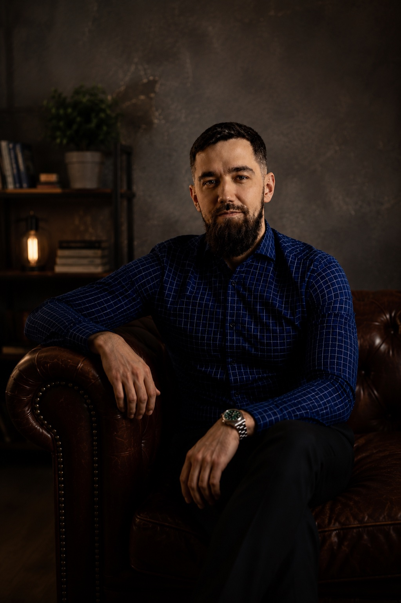

Онлайн-консультации в спокойном и бережном формате
Психологическая консультация для тех, кто хочет разобраться в себе и начать действовать
Помогаю бережно разобраться в сложных состояниях, кризисах, отношениях и личных изменениях.

Консультация как пространство, где можно спокойно говорить о важном и искать ясность.
Обо мне
Человеческий подход без лишней дистанции
Я начинающий психолог-консультант. Учусь на психолога, прошел переподготовку по психологическому консультированию и продолжаю развиваться в профессии.
В работе для меня важны честность, уважение к вашему темпу и внимательное отношение к тому, что с вами происходит. Я не ставлю медицинские диагнозы и не обещаю быстрых чудесных результатов. Моя задача - помочь вам яснее увидеть ситуацию, свои чувства, потребности и возможные шаги.
С чем можно обратиться
Запросы, с которыми можно прийти на консультацию
Как проходит консультация
Мы движемся постепенно и понятно
Знакомство и запрос
Спокойно обсуждаем, с чем вы пришли, чего хочется от встречи и что сейчас особенно важно.
Прояснение ситуации
Разбираем контекст, чувства, мысли и повторяющиеся сценарии без давления и оценок.
Поиск опоры и вариантов
Ищем, на что можно опереться сейчас, какие действия доступны и что поможет вернуть ясность.
Следующие шаги
В конце встречи договариваемся, что можно попробовать дальше и нужен ли следующий контакт.
Принципы работы
Важные правила, на которых держится консультация
- Конфиденциальность
- Уважение к вашему опыту и темпу
- Без осуждения
- Честная обратная связь
- Без обещаний волшебных результатов
Формат и стоимость
Онлайн-консультация
Подходит, если вам важно поговорить из комфортного места и не тратить время на дорогу.
- Длительность
- 50 минут
- Стоимость
- 3000 рублей
- Формат
- Telegram / Zoom / Google Meet
FAQ
Частые вопросы
Это точно для меня?
Можно начать с одной встречи. На ней мы спокойно посмотрим, что происходит, какой запрос сейчас важен и подходит ли вам такой формат работы.
Сколько встреч нужно?
Иногда достаточно одной консультации, чтобы прояснить ситуацию. Для более глубоких тем может понадобиться несколько встреч. Это обсуждается индивидуально.
Можно ли онлайн?
Да, консультации проходят онлайн в Telegram, Zoom или Google Meet. Главное - выбрать место, где вам будет спокойно и безопасно говорить.
Вы даете советы?
Я не даю готовых указаний, как жить. Вместо этого помогаю разобраться в ситуации, увидеть варианты и принять решение, которое подходит именно вам.
Что, если мне сложно говорить?
Это нормально. Мы можем двигаться постепенно, с паузами и в вашем темпе. Вам не нужно сразу рассказывать все.
Запись